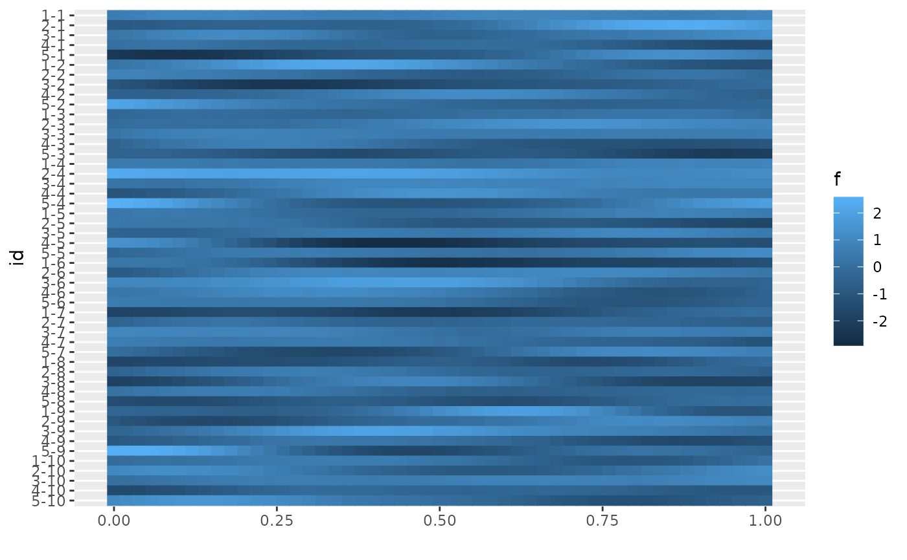
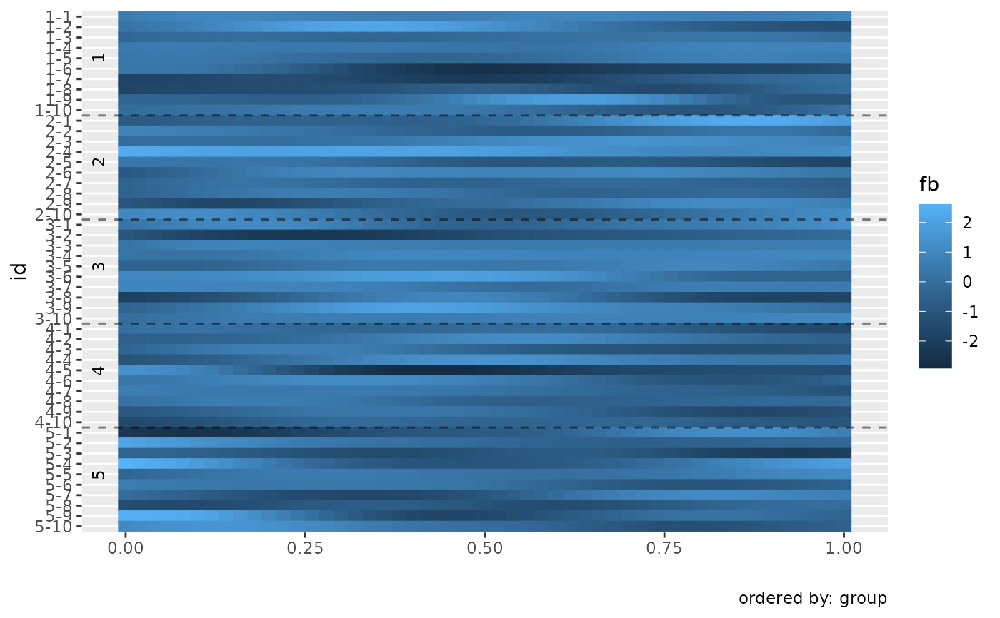
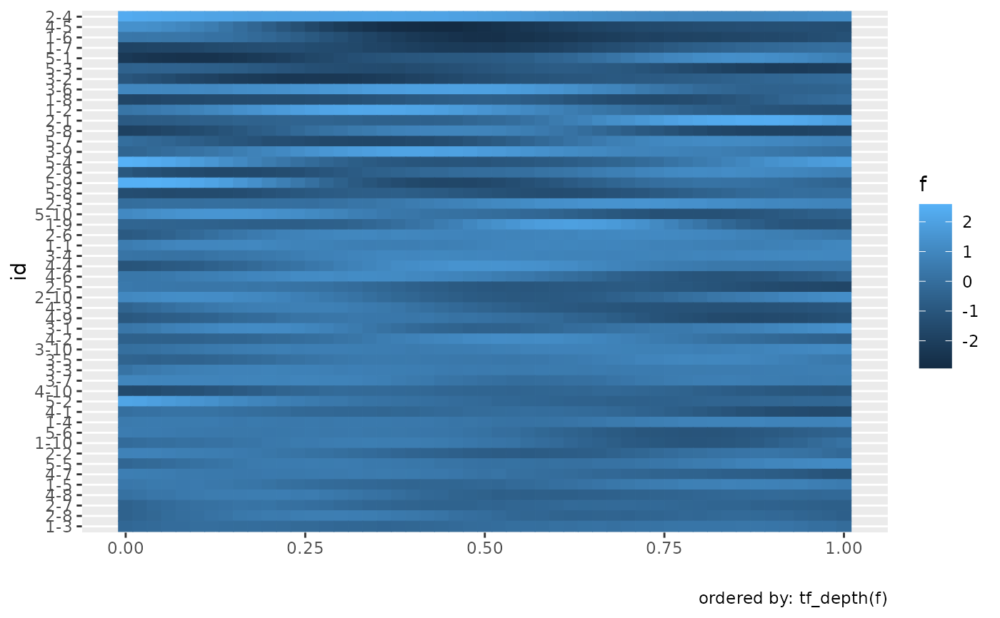
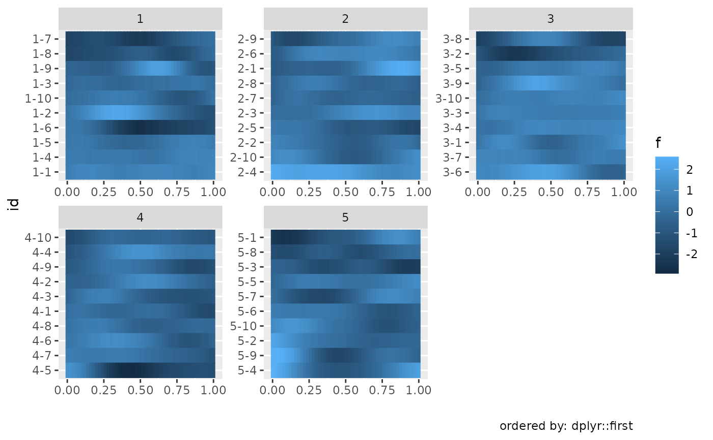
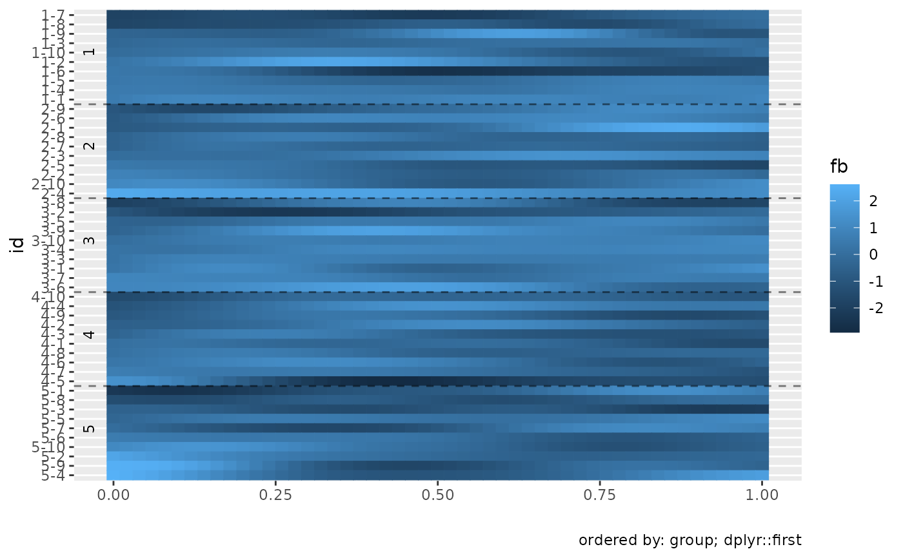

Lasagna plots show one color bar for each function.
Usage
gglasagna(
data,
tf,
order = NULL,
label = NULL,
arg = NULL,
order_by = NULL,
order_ticks = TRUE
)Arguments
- data
A data frame containing the
tfcolumn to visualize.- tf
bare name of the
tfcolumn to visualize- order
(optional) bare name of a column in
datato define vertical order of lasagna layers.- label
(optional) bare name of a column in
datato define labels for lasagna layers. Defaults to names ofy, if present, or row numbers.- arg
argto evaluateyon- order_by
a function applied to each row in
y[, arg]that must return a scalar value to define the order of lasagna layers.- order_ticks
add horizontal lines indicating borders between levels of
order(if it is a discrete variable) and labels for its levels? Defaults to TRUE. Supply a named list to override tick appearance, including label styling, line type, alpha, rotation, and label placement. Disable this when faceting; the tick annotations are not designed for faceted layouts.
Details
The vertical order of the lasagna layers is increasing in
order(if provided),the values returned by
order_by(if provided),and the row number of the observations.
i.e., lowest values are on top so that by default the first layer is the first
observation in data and the vertical order of the layers is the
ordering of observations obtained by dplyr::arrange(data, order, order_by(value), row_number()).
See also
Other tidyfun visualization:
autoplot.tf(),
ggcapellini,
ggspaghetti
Examples
# \donttest{
library(ggplot2)
set.seed(1221)
data <- expand.grid(group = factor(1:5), rep = 1:10)
data <- dplyr::mutate(data,
id = paste(group, rep, sep = "-"),
f = tf_rgp(50),
fb = tfb(f)
)
#> Percentage of input data variability preserved in basis representation
#> (per functional observation, approximate):
#> Min. 1st Qu. Median Mean 3rd Qu. Max.
#> 97.40 99.72 99.85 99.69 99.90 100.00
gglasagna(data, f, label = id)

gglasagna(data, fb, label = id, order = group)
#> Warning: Removed 1 row containing missing values or values outside the scale range
#> (`geom_hline()`).

# order is lowest first / on top by default
gglasagna(data, f, label = id, order = tf_depth(f))

gglasagna(data, f, label = id, order_by = dplyr::first) +
facet_wrap(~group, scales = "free")

# order of layers is by "order_by" within "order":
gglasagna(data, fb, label = id, order = group, order_by = dplyr::first)
#> Warning: Removed 1 row containing missing values or values outside the scale range
#> (`geom_hline()`).

# }